Table of Contents
- 1. MONETDB Internals
- 2. Binary Association Tables
- 3. MAL Reference (MonetDB Assembly Language)
- 3.1. Literals (follow the lexical conventions of C)
- 3.2. Variables
- 3.3. Instructions
- 3.4. Type System
- 3.5. Flow of Control
- 3.6. Exceptions
- 3.7. Modules
- 3.8. Functions
- 3.9. MAL Syntax
- 3.10. MAL Interpreter
- 3.11. MAL Debugger
- 3.12. MAL Profiler
- 3.13. MAL Optimizers
- 3.13.1. Alias Removal
- 3.13.2. Building Blocks -> there are examples for a user to build a Optimizer
- 3.13.3. Coercions
- 3.13.4. Common Subexpressions
- 3.13.5. Constant Expression Evaluation
- 3.13.6. Cost Model
- 3.13.7. Data Flow
- 3.13.8. Garbage Collector
- 3.13.9. Join Paths
- 3.13.10. Landscape
- 3.13.11. Lifespans
- 3.13.12. Macro Processing
- 3.13.13. Memoization
- 3.13.14. Multiplex Functions
- 3.13.15. Remove Actions
- 3.13.16. Stack Reduction
- 3.14. MAL Modules
1 MONETDB Internals
1.1 Redesign considerations.
Redesign of the MonetDB software driven by the need to reduce the effort to extend the system into novel directions and to reduce the Total Execution Cost (TEC).
TEC:
- API message handling (A)
- Parsing and semantic analysis (P)
- Optimization and plan generation (O)
- Data access to the persistent store (D)
- Execution of the query terms (E)
- Result delivery to the application (R)
OLTP -> Online Transaction Processing -> expected most of the cost to be in (P,O) OLAP -> Online Analytical Processing -> expected most of the cost to be in (D,E,R)
1.2 Storage Model
- Represents relational tables using vertical fragmentation.
- Stores each column in a separate {(OID,value)} table, called a BAT (Binary Association Table)
- Relies on a low-level relational algebra called the BAT algebra, which takes BATs and scalar values as input.
- The complete result is always stored in (intermediate) BATs, and the result of an SQL query is a collection of BATs.
- BAT is implemented as an ordinary C-array. OID maps to the index in the array.
- Persistent version of BAT is a memory mapped file.
- O(1) positional database lookup mechanism (MMU - memory management unit)
1.3 All (relational) operators exploit a small set of properties:
- seq - the sequence base, a mapping from array index 0 into a OID value
- key - the values in the column are unique
- nil - there is at least one NIL value
- nonil - it is unknown if there NIL values
- dense - the numeric values in the column form a dense sequence
- sorted - the column contains a sorted list for ordered domains
- revsorted - the column contains a reversed sorted list
1.4 Execution Model
- MonetDB kernel is an abstract machine, programmed in the MonetDB Assemblee Language (MAL).
- Each relational algebra operator corresponds to a MAL instruction (zero degrees of freedom).
- Each BAT algebra operator maps to a simple MAL instruction.
1.5 Software Stack
Three software layers:
- FRONT-END Query language parser and a heuristic, language - and data model - specific optimizer. OUTPUT -> logical plan expressed in MAL.
- BACK-END Collection of optimizer modules -> assembled into an optimization pipeline
- MAL interpreter -> contains the library of highly optimized implementation of the binary relational algebra operators.
2 Binary Association Tables
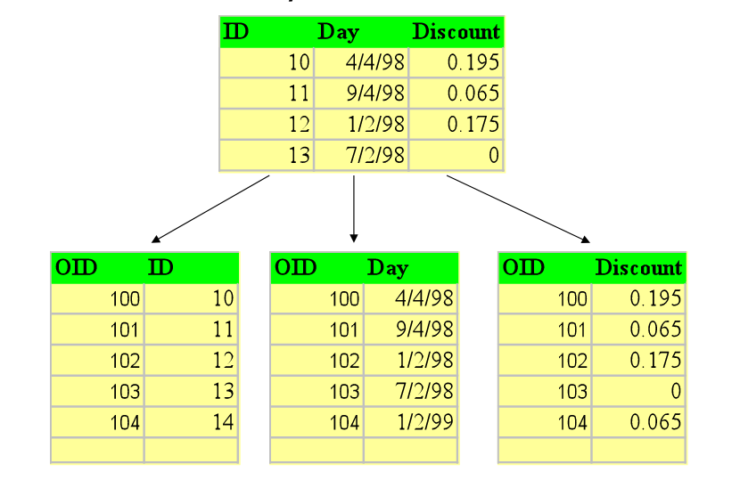
3 MAL Reference (MonetDB Assembly Language)
- MAL program is considered a specification of intended computation and data flow behavior.
- Language syntax uses a functional style definition of actions and mark those that affect the flow explicitly.
3.1 Literals (follow the lexical conventions of C)
| Hardwire Types | Temporal Types | IPv4 addresses and URLs |
|---|---|---|
| bit (bit) | date | inet |
| bte (byte) | daytime | url |
| chr (char) | time | UUID |
| wrd (word) | timestamp | json |
| sht (short) | - | - |
| int (integer) | - | - |
| lng (long) | - | - |
| oid (object id) | - | - |
| flt (float) | - | - |
| dbl (double) | - | - |
| str (string) | - | - |
3.2 Variables
User Defined -> start with a letter Temporary -> start with X_ (generated internally by optimizers)
3.3 Instructions
One liners -> easy to parse
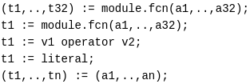
3.4 Type System
Strongly typed language
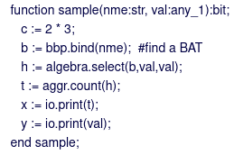
- Polymorphic given by "any".
- Type checker (intelligent type resolution).
3.5 Flow of Control
For statement implementation: 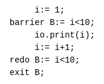
If statement implementation: 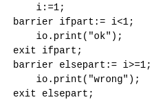
3.6 Exceptions
(To explore.)
3.7 Modules
(Name Space Management. To explore.)
3.8 Functions
Function example 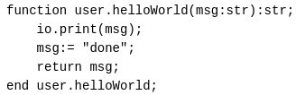
Side Effects
- Functions can be pre-pended with the keyword unsafe.
- Designates that execution of the function may change the state of the database or sends information to the client.
- Unsafe functions are critical for the optimizers -> order of execution should be guaranteed.
- Functions that return :void -> unsafe by default.
Inline Functions
- Functions prepended with the keyword inline are a target for the optimizers to be inlined. -> reduce the function call overhead.
3.9 MAL Syntax
Expressed in extended Backus–Naur form (EBNF) Wiki
| Alternative constructors | (vertical bar) grouped by () |
|---|---|
| Repetition | '+'-> at least once; '*'-> many |
| Lexical tokens | small capitals |
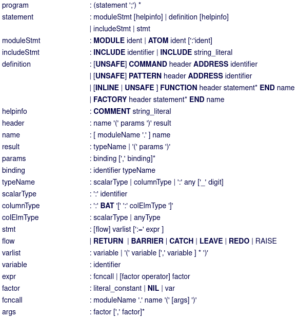
3.10 MAL Interpreter
3.11 MAL Debugger
3.12 MAL Profiler
3.13 MAL Optimizers
Triggered by experimentation and curiousity
3.13.1 Alias Removal
3.13.2 Building Blocks -> there are examples for a user to build a Optimizer
3.13.3 Coercions
Removes coercions that are not needed –> v:= calc.int(23); (sloppy code-generator or function call resolution decision)
3.13.4 Common Subexpressions
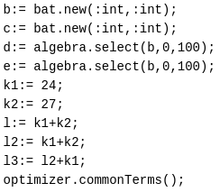 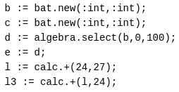
3.13.5 Constant Expression Evaluation
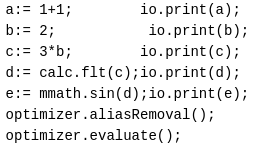 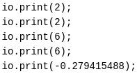
3.13.6 Cost Model
3.13.7 Data Flow
Query executions without side effects can be rearranged.
3.13.8 Garbage Collector
3.13.9 Join Paths
Looks up the MAL query and "composes" multiple joins. algebra.join -> algebra.joinPath